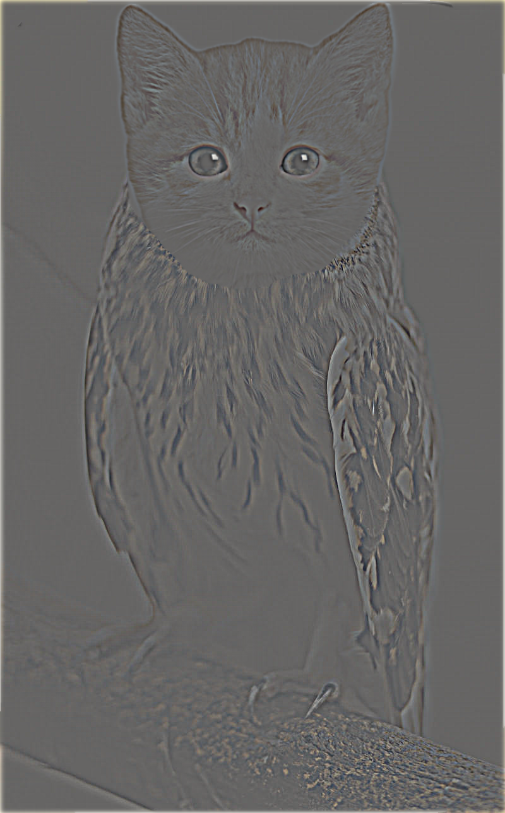

Part 1: Fun with Filters
Part 1.1: Finite Difference Operator
The gradient magnitude computation involves determining the strength of changes in intensity at each point in an image. Filters like \( D_x = \begin{bmatrix} -1 & 1 \end{bmatrix} \) and \( D_y = \begin{bmatrix} -1 \\ 1 \end{bmatrix} \) are finite difference operators to estimate the gradient in the horizontal and vertical directions, respectively.
Filter \( D_x = \begin{bmatrix} -1 & 1 \end{bmatrix} \):
This is a horizontal gradient filter that computes the difference between adjacent pixels in the x-direction (left to right). It measures the change in intensity between a pixel and its neighbor.
Filter \( D_y = \begin{bmatrix} -1 \\ 1 \end{bmatrix} \):
This is a vertical gradient filter that computes the difference between adjacent pixels in the y-direction (top to bottom). It measures the change in intensity between a pixel and the pixel below it.
Gradient Magnitude Computation:
Once you apply these filters to the image, you get two gradients at each pixel location: one in the x-direction (\( G_x \)) and one in the y-direction (\( G_y \)). The magnitude of the gradient at each point can be computed using:
\[ |\nabla I| = \sqrt{G_x^2 + G_y^2} \]
cameraman
|
\[ G_{x} \] |
\[ G_{y} \] |
gradient magnitude |
binary magnitude |
The threshold for the binary magnitude is set to 80. If a pixel’s value exceeds 20, it is considered part of an edge.
Part 1.2: Derivative of Gaussian (DoG) Filter
Method 1
If we directly apply the Finite Difference Operator, the result may be noisy. A Gaussian filter can be used to smooth the image, reducing noise. Therefore, we first apply the Gaussian filter to smooth the image and then use the Finite Difference Operator to calculate the gradient magnitude. This can reduce the effect of noise in the image and produce a more accurate and thicker edge image. The results are shown below:|
\[ G_{x} \] |
\[ G_{y} \] |
gradient magnitude |
binary magnitude |
Method 2
Since the derivative of the convolution of two functions is equivalent to the convolution of the derivative of one function with the other, we can calculate the gradient magnitude of the Gaussian filter using the Finite Difference Operator, and then convolve it with the image. The results of this visualization are shown below:|
Convolving the gaussian with \[D_x\] |
Convolving the gaussian with \[D_y\] |
|
\[ G_{x} \] |

\[ G_{y} \] |
gradient magnitude |
binary magnitude |
Part 2: Fun with Frequencies!
Part 2.1: Image "Sharpening"
To enhance the sharpness, we can add the high-frequency image back to the original image. This is because the high-frequency components of an image represent rapid intensity changes, such as edges and fine details. Adding high frequency image back to original image boosts the contrast of the fine details and edges, making the image appear sharper. The process can be controlled by a scaling factor \(\alpha\) to adjust the intensity of sharpening: \[sharpend \ image = image +\alpha * \ high \ frequency \ of \ image\] Results of Taj Mahal processing by unmask sharp filter
.png)
\[\alpha=0\] |
\[\alpha=1\] |
\[\alpha=2\] |
\[\alpha=3\] |
\[\alpha=4\] |
Sunset
|
Original image |
\[\alpha=1\] |
\[\alpha=2\] |
\[\alpha=3\] |
\[\alpha=4\] |
Tower (blur and resharpen)
|
Original image |
Blurring image |
\[\alpha=1\] |
\[\alpha=2\] |
\[\alpha=3\] |
\[\alpha=4\] |
Part 2.2: Hybrid Images
Multiresolution blending combines low and high-frequency components from different images to create hybrid images. The low-pass filter (Gaussian) captures the smooth, large-scale structures, while the high-pass filter retains fine details by subtracting the low frequencies from the original image. The blended image shifts perception based on viewing distance—high frequencies dominate up close, revealing one image, while low frequencies emerge from a distance, revealing another. In the above visualization, we first compute the low frequency of DerekPicture nad the high frequency of nutmeg. Then, we add them together. The small size hybrid image simulates from viewing the image from a distance. In this case, we can see DerekPicture from the hybrid imageThe freqeuncy analysis
From the visualization, we can see that the low-pass filter removes the high frequencies, while the high-pass filter eliminates the low frequencies. The frequency of the hybrid image is a combination of the low frequencies from one image and the high frequencies from another.Albert Einstein and Marilyn Monroe
|
original image |
original image |
hybrid image |
Dog and man in suit(failure)
|
original image |
original image |
hybrid image |
Part 2.3: Gaussian and Laplacian Stacks
A Gaussian stack is a set of images where each image is a progressively blurred version of the original. The blurring is achieved by applying a Gaussian filter with increasing levels of smoothing. A Laplacian stack represents the details at different scales by capturing the difference between successive levels of the Gaussian stack. It highlights the edges and fine structures. The visualization of Gaussian stack and Laplacian stack are shown below. (apple and orange)Gaussian Stack of apple

|
Laplacian Stack of apple
Gaussian Stack of orange

|
Laplacian Stack of orange
Part 2.4: Multiresolution Blending
Multiresolution Blending is a technique that merges two images seamlessly using Gaussian and Laplacian stacks. First, create Gaussian and Laplacian stacks for both images and a binary mask. The mask defines the blending region, and its Gaussian stack smooths the transition. For each level of the stack, blend the corresponding levels of the two images using the mask. Finally, reconstruct the blended image by combining the blended Laplacian levels. This method prevents sharp seams and ensures smooth transitions across multiple scales of resolution.Apple and orange

|

|
Dog and man in suit
| Big dog | Man in suit | Mask |
Cat and owk
| Cute cat | Owl | Mask |
|  |